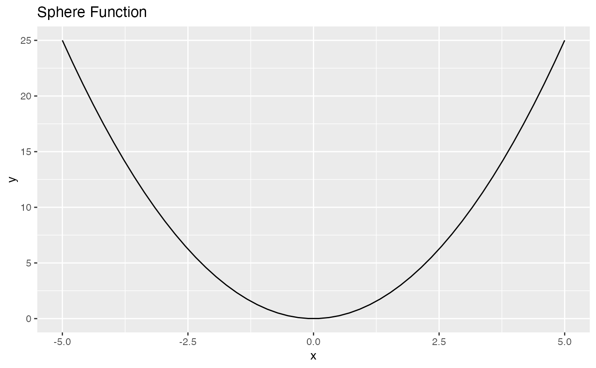
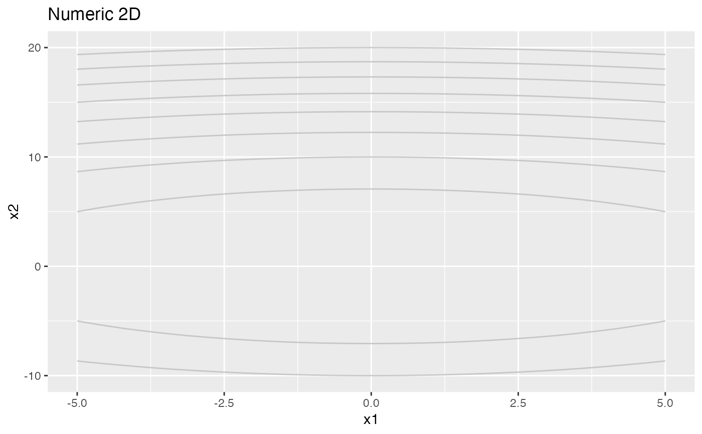
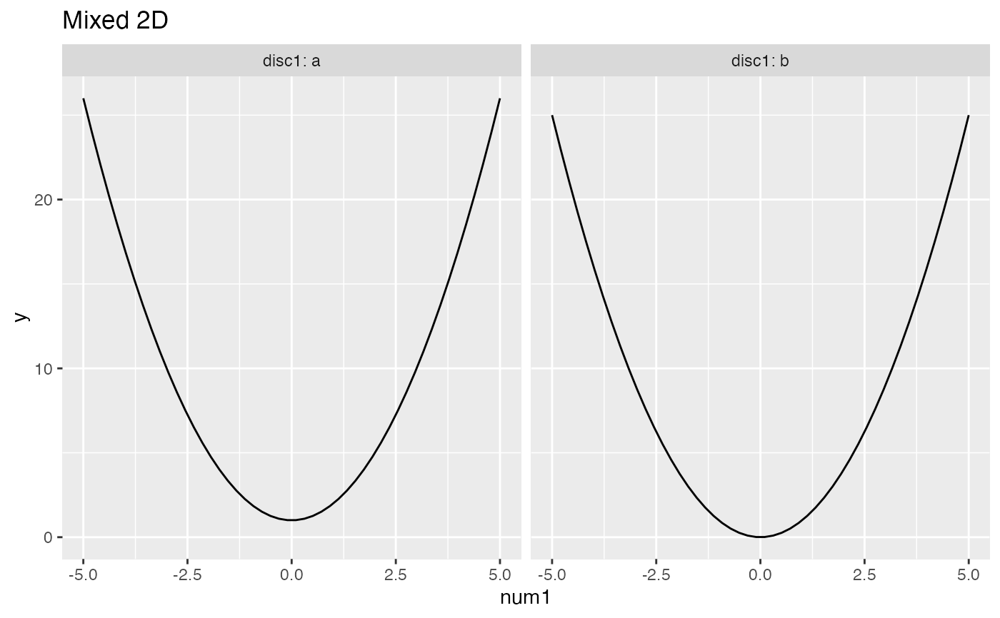

R/makeSingleObjectiveFunction.R
makeSingleObjectiveFunction.RdGenerator for single-objective target functions.
makeSingleObjectiveFunction( name = NULL, id = NULL, description = NULL, fn, has.simple.signature = TRUE, vectorized = FALSE, par.set, noisy = FALSE, fn.mean = NULL, minimize = TRUE, constraint.fn = NULL, tags = character(0), global.opt.params = NULL, global.opt.value = NULL, local.opt.params = NULL, local.opt.values = NULL )
| name | [ |
|---|---|
| id | [ |
| description | [ |
| fn | [ |
| has.simple.signature | [ |
| vectorized | [ |
| par.set | [ |
| noisy | [ |
| fn.mean | [ |
| minimize | [ |
| constraint.fn | [ |
| tags | [ |
| global.opt.params | [ |
| global.opt.value | [ |
| local.opt.params | [ |
| local.opt.values | [ |
[function] Objective function with additional stuff attached as attributes.
library(ggplot2) fn = makeSingleObjectiveFunction( name = "Sphere Function", fn = function(x) sum(x^2), par.set = makeNumericParamSet("x", len = 1L, lower = -5L, upper = 5L), global.opt.params = list(x = 0) ) print(fn)#> Single-objective function #> Name: Sphere Function #> Description: no description #> Tags: #> Noisy: FALSE #> Minimize: TRUE #> Constraints: TRUE #> Number of parameters: 1 #> Type len Def Constr Req Tunable Trafo #> x numericvector 1 - -5 to 5 - TRUE - #> Global optimum objective value of 0.0000 at #> x #> 1 0fn.num2 = makeSingleObjectiveFunction( name = "Numeric 2D", fn = function(x) sum(x^2), par.set = makeParamSet( makeNumericParam("x1", lower = -5, upper = 5), makeNumericParam("x2", lower = -10, upper = 20) ) ) print(fn.num2)#> Single-objective function #> Name: Numeric 2D #> Description: no description #> Tags: #> Noisy: FALSE #> Minimize: TRUE #> Constraints: TRUE #> Number of parameters: 2 #> Type len Def Constr Req Tunable Trafo #> x1 numeric - - -5 to 5 - TRUE - #> x2 numeric - - -10 to 20 - TRUE -fn.mixed = makeSingleObjectiveFunction( name = "Mixed 2D", fn = function(x) x$num1^2 + as.integer(as.character(x$disc1) == "a"), has.simple.signature = FALSE, par.set = makeParamSet( makeNumericParam("num1", lower = -5, upper = 5), makeDiscreteParam("disc1", values = c("a", "b")) ), global.opt.params = list(num1 = 0, disc1 = "b") ) print(fn.mixed)#> Single-objective function #> Name: Mixed 2D #> Description: no description #> Tags: #> Noisy: FALSE #> Minimize: TRUE #> Constraints: TRUE #> Number of parameters: 2 #> Type len Def Constr Req Tunable Trafo #> num1 numeric - - -5 to 5 - TRUE - #> disc1 discrete - - a,b - TRUE - #> Global optimum objective value of 0.0000 at #> num1 disc1 #> 1 0 b